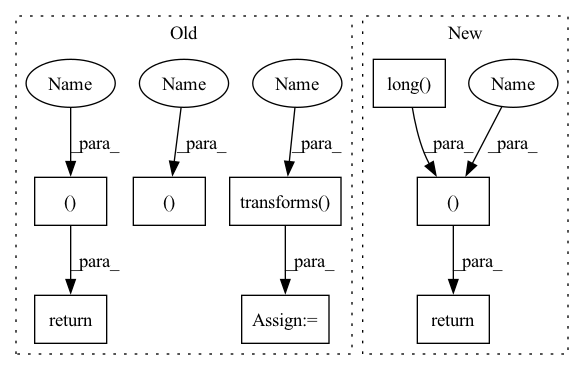

Pattern ID :37006

Before Change
label = io.read_image(lbl_path)
if self.transforms:
image, label = self.transforms(image, label)
image, label = self.transform(image, label)
return image, label
def transform(self, image: torch.Tensor, label: torch.Tensor) -> Tuple[torch.Tensor, torch.Tensor]:
image = image.float()
After Change
if self.transform:
image, label = self.transform(image, label)
return image, label.squeeze().long() - 1 // subtract -1 since original label index starts from 1
def decode(self, label: Tensor) -> Tensor:
return self.PALETTE[label.to(int)]
In pattern: SUPERPATTERN
Frequency: 3
Non-data size: 8
Instances
Fragment ID: 105275290
Project Name: sithu31296/semantic-segmentation
Commit Name: 66612f96041d5c478f558477efc0b23d246747d4
Time: 2021-08-02
Author: sithu31296@gmail.com
File Name: datasets/ade20k.py
M Class Name: ADE20K
N Class Name: ADE20K
M Method Name: __getitem__(2)
N Method Name: __getitem__(2)
M Parent Class: Dataset
N Parent Class: Dataset
M File Name: datasets/ade20k.py
N File Name: datasets/ade20k.py
M Start Line: 108
M End Line: 115
N Start Line: 101
N End Line: 106
'>
Before Change
img_path = str(self.files[index])
lbl_path = str(self.files[index]).replace(self.split, self.split + "_labels").replace(".png", "_L.png")
image = io.read_image(img_path)
label = io.read_image(lbl_path)
if self.transforms:
image, label = self.transforms(image, label)
image, label = self.transform(image, label)
return image, label
def transform(self, image, label):
image = image.float()
After Change
img_path = str(self.files[index])
lbl_path = str(self.files[index]).replace(self.split, self.split + "_labels").replace(".png", "_L.png")
image = io.read_image(img_path)
label = io.read_image(lbl_path)
if self.transform:
image, label = self.transform(image, label)
return image, self.encode(label).long()
def encode(self, label: Tensor) -> Tensor:
label = label.permute(1, 2, 0)
mask = torch.zeros(label.shape[:-1])
'>
Fragment ID: 105275291
Project Name: sithu31296/semantic-segmentation
Commit Name: 66612f96041d5c478f558477efc0b23d246747d4
Time: 2021-08-02
Author: sithu31296@gmail.com
File Name: datasets/camvid.py
M Class Name: CamVid
N Class Name: CamVid
M Method Name: __getitem__(2)
N Method Name: __getitem__(2)
M Parent Class: Dataset
N Parent Class: Dataset
M File Name: datasets/camvid.py
N File Name: datasets/camvid.py
M Start Line: 47
M End Line: 54
N Start Line: 42
N End Line: 47
'>
Before Change
img_path = str(self.files[index])
lbl_path = str(self.files[index]).replace("leftImg8bit", "gtFine").replace(".png", "_labelIds.png")
image = io.read_image(img_path)
label = io.read_image(lbl_path)
if self.transforms:
image, label = self.transforms(image, label)
image, label = self.transform(image, label)
return image, label
def transform(self, image: torch.Tensor, label: torch.Tensor) -> Tuple[torch.Tensor, torch.Tensor]:
image = image.float()
After Change
img_path = str(self.files[index])
lbl_path = str(self.files[index]).replace("leftImg8bit", "gtFine").replace(".png", "_labelIds.png")
image = io.read_image(img_path)
label = io.read_image(lbl_path)
if self.transform:
image, label = self.transform(image, label)
return image, self.encode(label.squeeze().numpy()).long()
def encode(self, label: Tensor) -> Tensor:
label = self.label_map[label]
return torch.from_numpy(label)
'>
Fragment ID: 105275289
Project Name: sithu31296/semantic-segmentation
Commit Name: 66612f96041d5c478f558477efc0b23d246747d4
Time: 2021-08-02
Author: sithu31296@gmail.com
File Name: datasets/cityscapes.py
M Class Name: CityScapes
N Class Name: CityScapes
M Method Name: __getitem__(2)
N Method Name: __getitem__(2)
M Parent Class: Dataset
N Parent Class: Dataset
M File Name: datasets/cityscapes.py
N File Name: datasets/cityscapes.py
M Start Line: 51
M End Line: 58
N Start Line: 49
N End Line: 54